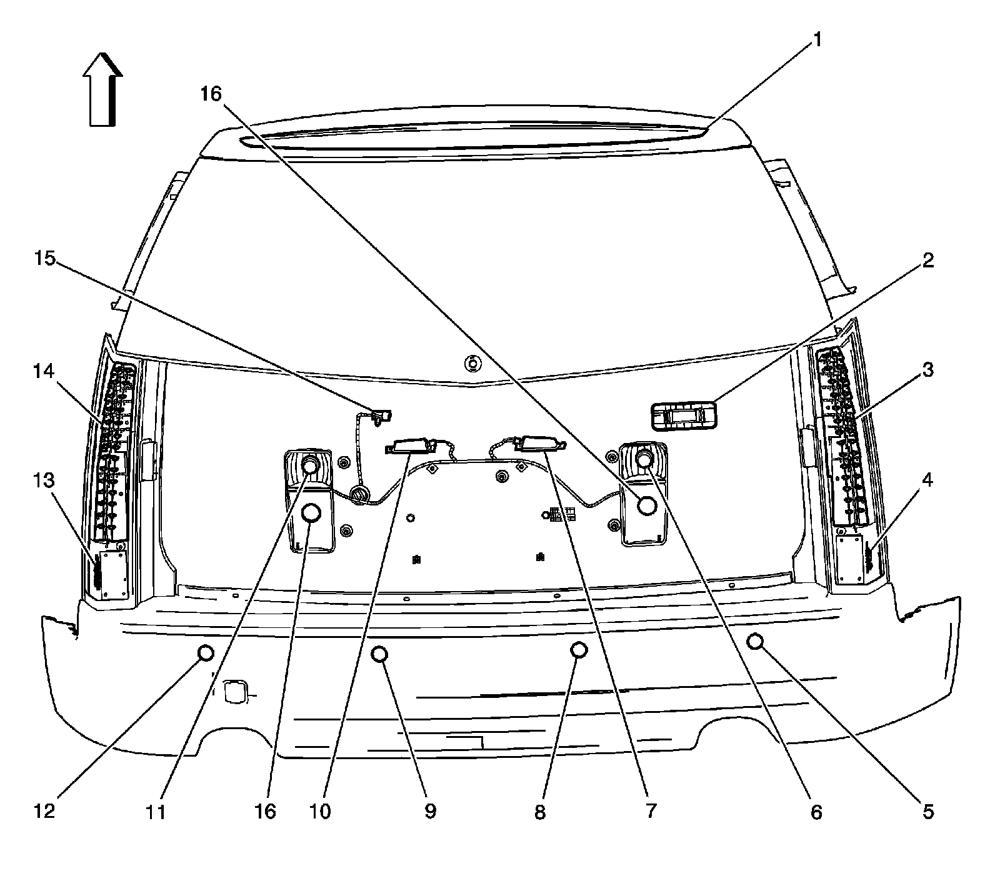
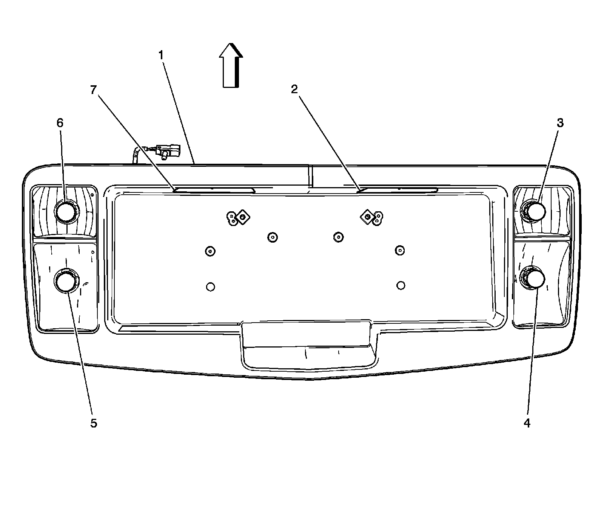

X900 - X999
Luggage Compartment/Rear of Vehicle Component Views
Exterior Lights Components 1 of 2

1 - Center High Mounted Stop Lamp (CHMSL)
2 - Courtesy Lamp - Liftgate
3 - Tail Lamp Assembly - Right
4 - Tail Lamp Drive Module - Right
5 - Object Sensor - Right Rear Corner
6 - Backup Lamp - Right
7 - License Lamp - Right
8 - Object Sensor - Right Rear Middle
9 - Object Sensor - Left Rear Middle
10 - License Lamp - Left
11 - Backup Lamp - Left
12 - Object Sensor - Left Rear Corner
13 - Tail Lamp Drive Module - Left
14 - Tail Lamp Assembly - Left
15 - X901
16 - Fog Lamp - Left Rear /Right Rear (T79)
Exterior Lights Components 2 of 2

1 - License Lamp Assembly
2 - License Lamp - Right
3 - Backup Lamp - Right
4 - Fog Lamp - Right Rear (T79)
5 - Fog Lamp - Left Rear (T79)
6 - Backup Lamp - Left
7 - License Lamp - Left